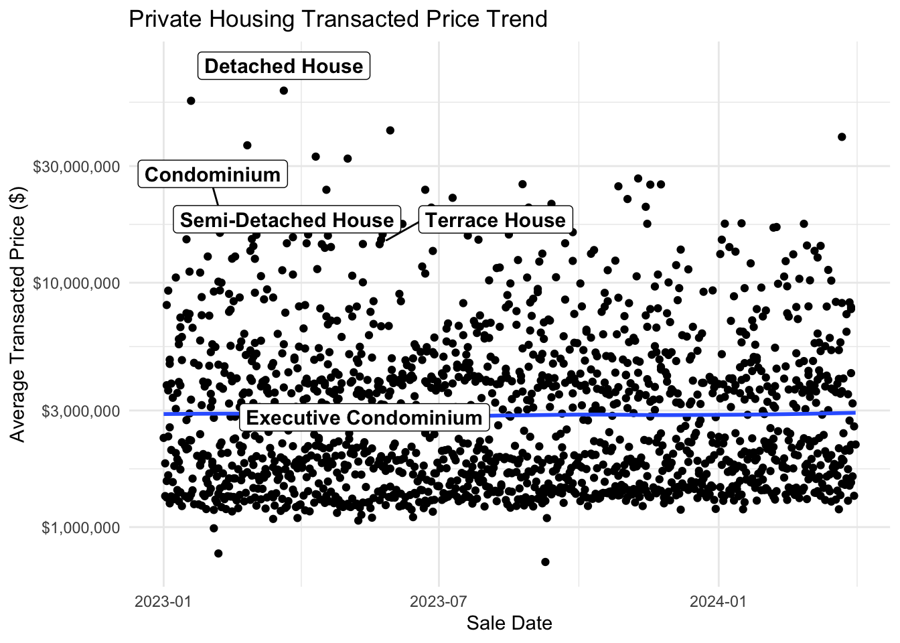
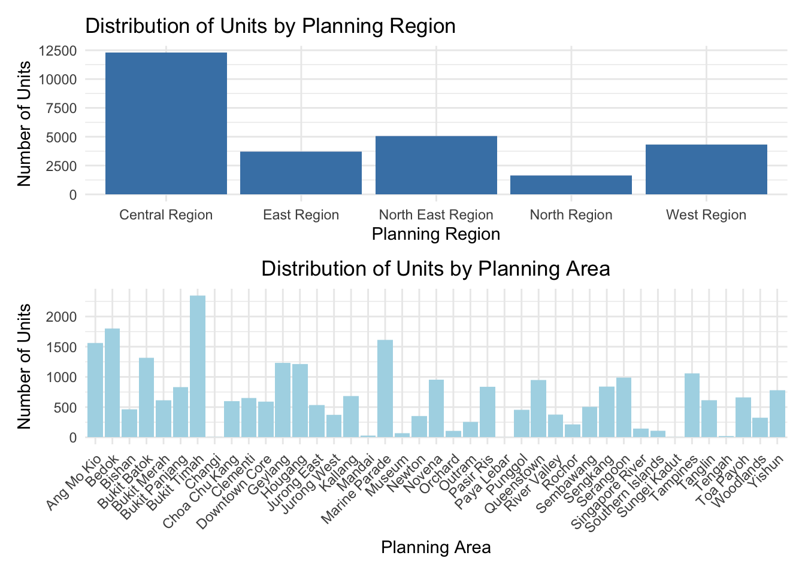

pacman::p_load(tidyverse)
pacman::p_load(ggrepel, patchwork,
ggthemes, hrbrthemes,
tidyverse) Take-home Exercise 1
Creating data visualisation beyond default
Setting the Scene
There are two major residential property market in Singapore, namely public and private housing. Public housing aims to meet the basic need of the general public with monthly household income less than or equal to S$14,000. For families with monthly household income more than S$14,000, they need to turn to the private residential market.
our Task
In this exercise, Exploratory Data Analysis (EDA) methods and ggplot functions are used to explore:
the distribution of prices across different regions and types of residences.
the relationship between the price and types of residences and sub-market.
The Data
A complete set of the private residential property transaction data from 1st January 2023 to 31st March 2024 are provided.

1. Getting Started
1.1 Loading R packages
We load the following R packages using the pacman::p_load() function:
tidyverse: Core collection of R packages designed for data science
ggrepel: to provides geoms for ggplot2 to repel overlapping text labels
ggthemes: to use additional themes for ggplot2
patchwork: to prepare composite figure created using ggplot2
hrbrthemes: to provides typography-centric themes and theme components for ggplot2
1.2 Importing data
The code chunk below imports the dataset into R environment by using read_csv() function of readr package. readr is one of the tidyverse package.
Read the individual CSV files into data frames. Check that the structure of each data frame is the same.
RT_q1_2023 <- read_csv("data/ResidentialTransaction2023Q1.csv")Rows: 4722 Columns: 21
── Column specification ────────────────────────────────────────────────────────
Delimiter: ","
chr (15): Project Name, Sale Date, Address, Type of Sale, Type of Area, Nett...
dbl (1): Number of Units
num (5): Transacted Price ($), Area (SQFT), Unit Price ($ PSF), Area (SQM),...
ℹ Use `spec()` to retrieve the full column specification for this data.
ℹ Specify the column types or set `show_col_types = FALSE` to quiet this message.RT_q2_2023 <- read_csv("data/ResidentialTransaction2023Q2.csv")Rows: 6125 Columns: 21
── Column specification ────────────────────────────────────────────────────────
Delimiter: ","
chr (15): Project Name, Sale Date, Address, Type of Sale, Type of Area, Nett...
dbl (1): Number of Units
num (5): Transacted Price ($), Area (SQFT), Unit Price ($ PSF), Area (SQM),...
ℹ Use `spec()` to retrieve the full column specification for this data.
ℹ Specify the column types or set `show_col_types = FALSE` to quiet this message.RT_q3_2023 <- read_csv("data/ResidentialTransaction2023Q3.csv")Warning: One or more parsing issues, call `problems()` on your data frame for details,
e.g.:
dat <- vroom(...)
problems(dat)Rows: 6206 Columns: 21
── Column specification ────────────────────────────────────────────────────────
Delimiter: ","
chr (15): Project Name, Sale Date, Address, Type of Sale, Type of Area, Nett...
dbl (2): Area (SQM), Number of Units
num (4): Transacted Price ($), Area (SQFT), Unit Price ($ PSF), Unit Price ...
ℹ Use `spec()` to retrieve the full column specification for this data.
ℹ Specify the column types or set `show_col_types = FALSE` to quiet this message.RT_q4_2023 <- read_csv("data/ResidentialTransaction2023Q4.csv")Rows: 4851 Columns: 21
── Column specification ────────────────────────────────────────────────────────
Delimiter: ","
chr (15): Project Name, Sale Date, Address, Type of Sale, Type of Area, Nett...
dbl (1): Number of Units
num (5): Transacted Price ($), Area (SQFT), Unit Price ($ PSF), Area (SQM),...
ℹ Use `spec()` to retrieve the full column specification for this data.
ℹ Specify the column types or set `show_col_types = FALSE` to quiet this message.RT_q1_2024 <- read_csv("data/ResidentialTransaction2024Q1.csv")Rows: 4902 Columns: 21
── Column specification ────────────────────────────────────────────────────────
Delimiter: ","
chr (15): Project Name, Sale Date, Address, Type of Sale, Type of Area, Nett...
dbl (1): Number of Units
num (5): Transacted Price ($), Area (SQFT), Unit Price ($ PSF), Area (SQM),...
ℹ Use `spec()` to retrieve the full column specification for this data.
ℹ Specify the column types or set `show_col_types = FALSE` to quiet this message.spec(RT_q1_2024)cols(
`Project Name` = col_character(),
`Transacted Price ($)` = col_number(),
`Area (SQFT)` = col_number(),
`Unit Price ($ PSF)` = col_number(),
`Sale Date` = col_character(),
Address = col_character(),
`Type of Sale` = col_character(),
`Type of Area` = col_character(),
`Area (SQM)` = col_number(),
`Unit Price ($ PSM)` = col_number(),
`Nett Price($)` = col_character(),
`Property Type` = col_character(),
`Number of Units` = col_double(),
Tenure = col_character(),
`Completion Date` = col_character(),
`Purchaser Address Indicator` = col_character(),
`Postal Code` = col_character(),
`Postal District` = col_character(),
`Postal Sector` = col_character(),
`Planning Region` = col_character(),
`Planning Area` = col_character()
)This is to conduct a preliminary exploration to understand the basic characteristics of the dataset.Notably, the ‘Sale Date’ column, which should ideally be a date type to facilitate chronological analysis, is read as a character (chr) type.
2. Data preparation
This process enhances the quality of the data and consequently the reliability of the analysis.
2.2 Convert data type
Before delving into analyses, it is imperative to assess the completeness of the dataset.
RT_q1_2023 <- RT_q1_2023 %>% mutate(`Sale Date` = as.Date(`Sale Date`, format = "%d %b %Y"))
RT_q2_2023 <- RT_q2_2023 %>% mutate(`Sale Date` = as.Date(`Sale Date`, format = "%d %b %Y"))
RT_q3_2023 <- RT_q3_2023 %>% mutate(`Sale Date` = as.Date(`Sale Date`, format = "%d %b %Y"))
RT_q4_2023 <- RT_q4_2023 %>% mutate(`Sale Date` = as.Date(`Sale Date`, format = "%d %b %Y"))
RT_q1_2024 <- RT_q1_2024 %>% mutate(`Sale Date` = as.Date(`Sale Date`, format = "%d %b %Y"))2.1 Combine the dataset.
Use the rbind() function to concatenate the data frames. Checking the data set structure.
RT_all <- bind_rows(RT_q1_2023, RT_q2_2023, RT_q3_2023, RT_q4_2023, RT_q1_2024)# Count missing values for each column in the combined data frame
missing_values_summary <- RT_all %>%
summarise(across(everything(), ~ sum(is.na(.))))
# View the summary of missing values
missing_values_summary# A tibble: 1 × 21
`Project Name` `Transacted Price ($)` `Area (SQFT)` `Unit Price ($ PSF)`
<int> <int> <int> <int>
1 0 0 0 0
# ℹ 17 more variables: `Sale Date` <int>, Address <int>, `Type of Sale` <int>,
# `Type of Area` <int>, `Area (SQM)` <int>, `Unit Price ($ PSM)` <int>,
# `Nett Price($)` <int>, `Property Type` <int>, `Number of Units` <int>,
# Tenure <int>, `Completion Date` <int>, `Purchaser Address Indicator` <int>,
# `Postal Code` <int>, `Postal District` <int>, `Postal Sector` <int>,
# `Planning Region` <int>, `Planning Area` <int>Check the combined dataset with str(), it shows all the detailed data after combine.
range(RT_all$`Sale Date`)[1] "2023-01-01" "2024-03-31"2.3 Remove duplicates and Creating new varaiables
Remove duplicates and missing values Remove duplicates based on ‘Area (SQM)’ and ‘Unit Price ($ PSM)’ columns and Nett Price($)
Classify the date accordingly as quarter ,
RT_new <- RT_new %>%
mutate(Quarter = case_when(
quarter(`Sale Date`) == 1 & year(`Sale Date`) == 2023 ~ "Q1 2023",
quarter(`Sale Date`) == 2 & year(`Sale Date`) == 2023 ~ "Q2 2023",
quarter(`Sale Date`) == 3 & year(`Sale Date`) == 2023 ~ "Q3 2023",
quarter(`Sale Date`) == 4 & year(`Sale Date`) == 2023 ~ "Q4 2023",
quarter(`Sale Date`) == 1 & year(`Sale Date`) == 2024 & month(`Sale Date`) %in% 1:3 ~ "Q1 2024",
TRUE ~ "Other"
))
head(RT_new)# A tibble: 6 × 19
`Project Name` `Transacted Price ($)` `Area (SQFT)` `Unit Price ($ PSF)`
<chr> <dbl> <dbl> <dbl>
1 THE REEF AT KING'S … 2317000 883. 2625
2 URBAN TREASURES 1823500 883. 2066
3 NORTH GAIA 1421112 1076. 1320
4 NORTH GAIA 1258112 1033. 1218
5 PARC BOTANNIA 1280000 872. 1468
6 NANYANG PARK 5870000 3323. 1767
# ℹ 15 more variables: `Sale Date` <date>, Address <chr>, `Type of Sale` <chr>,
# `Type of Area` <chr>, `Property Type` <chr>, `Number of Units` <dbl>,
# Tenure <chr>, `Completion Date` <chr>, `Purchaser Address Indicator` <chr>,
# `Postal Code` <chr>, `Postal District` <chr>, `Postal Sector` <chr>,
# `Planning Region` <chr>, `Planning Area` <chr>, Quarter <chr>Check the property type for classification
unique(RT_new$`Property Type`)[1] "Condominium" "Executive Condominium" "Terrace House"
[4] "Semi-Detached House" "Apartment" "Detached House" Condominium, Terrace House, Executive Condominium, Semi-Detached House, and Detached House would be classified as Private Housing. Apartment is a Housing and Development Board (HDB) flat, which is public housing.
To create a new column in the dataframe with the classification of ‘Public Housing’ or ‘Private Housing’,we can use the mutate function from the dplyr package
private_types <- c("Condominium", "Terrace House", "Executive Condominium",
"Semi-Detached House", "Detached House")
public_types <- c("Apartment") # Modify this based on your specific context
# Define the function to classify the housing type
classify_housing <- function(type) {
if (type %in% private_types) {
return('Private Housing')
} else if (type %in% public_types) {
return('Public Housing')
} else {
return('Other') # In case there are types that do not fit in the above categories
}
}
# Use mutate to apply the classification to a new column
RT_new <- RT_new %>%
mutate(Housing_Category = sapply(`Property Type`, classify_housing))
# Check the first few rows of your dataframe to confirm
head(RT_new)# A tibble: 6 × 20
`Project Name` `Transacted Price ($)` `Area (SQFT)` `Unit Price ($ PSF)`
<chr> <dbl> <dbl> <dbl>
1 THE REEF AT KING'S … 2317000 883. 2625
2 URBAN TREASURES 1823500 883. 2066
3 NORTH GAIA 1421112 1076. 1320
4 NORTH GAIA 1258112 1033. 1218
5 PARC BOTANNIA 1280000 872. 1468
6 NANYANG PARK 5870000 3323. 1767
# ℹ 16 more variables: `Sale Date` <date>, Address <chr>, `Type of Sale` <chr>,
# `Type of Area` <chr>, `Property Type` <chr>, `Number of Units` <dbl>,
# Tenure <chr>, `Completion Date` <chr>, `Purchaser Address Indicator` <chr>,
# `Postal Code` <chr>, `Postal District` <chr>, `Postal Sector` <chr>,
# `Planning Region` <chr>, `Planning Area` <chr>, Quarter <chr>,
# Housing_Category <chr>glimpse(RT_new)Rows: 26,806
Columns: 20
$ `Project Name` <chr> "THE REEF AT KING'S DOCK", "URBAN TREASU…
$ `Transacted Price ($)` <dbl> 2317000, 1823500, 1421112, 1258112, 1280…
$ `Area (SQFT)` <dbl> 882.65, 882.65, 1076.40, 1033.34, 871.88…
$ `Unit Price ($ PSF)` <dbl> 2625, 2066, 1320, 1218, 1468, 1767, 1095…
$ `Sale Date` <date> 2023-01-01, 2023-01-02, 2023-01-02, 202…
$ Address <chr> "12 HARBOURFRONT AVENUE #05-32", "205 JA…
$ `Type of Sale` <chr> "New Sale", "New Sale", "New Sale", "New…
$ `Type of Area` <chr> "Strata", "Strata", "Strata", "Strata", …
$ `Property Type` <chr> "Condominium", "Condominium", "Executive…
$ `Number of Units` <dbl> 1, 1, 1, 1, 1, 1, 1, 1, 1, 1, 1, 1, 1, 1…
$ Tenure <chr> "99 yrs from 12/01/2021", "Freehold", "9…
$ `Completion Date` <chr> "Uncompleted", "Uncompleted", "Uncomplet…
$ `Purchaser Address Indicator` <chr> "HDB", "Private", "HDB", "HDB", "HDB", "…
$ `Postal Code` <chr> "097996", "419535", "269343", "269294", …
$ `Postal District` <chr> "04", "14", "27", "27", "28", "19", "10"…
$ `Postal Sector` <chr> "09", "41", "26", "26", "79", "54", "27"…
$ `Planning Region` <chr> "Central Region", "East Region", "North …
$ `Planning Area` <chr> "Bukit Merah", "Bedok", "Yishun", "Yishu…
$ Quarter <chr> "Q1 2023", "Q1 2023", "Q1 2023", "Q1 202…
$ Housing_Category <chr> "Private Housing", "Private Housing", "P…2.4 Summary satatistics of data table
library(dplyr)
library(tidyr)
# Assuming RT_new has been previously loaded and mutated to include the Quarter column
summary_table <- RT_new %>%
group_by(Quarter, `Property Type`) %>%
summarise(
Total_Transactions = n(),
Average_Price = mean(`Transacted Price ($)`, na.rm = TRUE),
Median_Price = median(`Transacted Price ($)`, na.rm = TRUE),
Min_Price = min(`Transacted Price ($)`, na.rm = TRUE),
Max_Price = max(`Transacted Price ($)`, na.rm = TRUE),
.groups = 'drop' # This will remove the grouping
)
print(summary_table)# A tibble: 30 × 7
Quarter `Property Type` Total_Transactions Average_Price Median_Price
<chr> <chr> <int> <dbl> <dbl>
1 Q1 2023 Apartment 1659 2072938. 1707000
2 Q1 2023 Condominium 2166 2189488. 1608000
3 Q1 2023 Detached House 62 14324795. 11550000
4 Q1 2023 Executive Condominium 535 1394549. 1330000
5 Q1 2023 Semi-Detached House 88 5783790. 5559000
6 Q1 2023 Terrace House 212 3832491. 3550000
7 Q1 2024 Apartment 1852 1853613. 1668902.
8 Q1 2024 Condominium 1858 2002576. 1730000
9 Q1 2024 Detached House 40 12378131. 10940000
10 Q1 2024 Executive Condominium 843 1520791. 1488000
# ℹ 20 more rows
# ℹ 2 more variables: Min_Price <dbl>, Max_Price <dbl>3. Exploratory Data Analysis
3.1 the Private housing transaction trend from 2023-2024Q1
library(dplyr)
library(ggplot2)
library(ggrepel)
library(scales)
Attaching package: 'scales'The following object is masked from 'package:purrr':
discardThe following object is masked from 'package:readr':
col_factor# Filter the original dataset for private housing
private_housing_data <- RT_new %>%
filter(Housing_Category == "Private Housing")
# Aggregate to find the average transacted price for each property type and sale date
transacted_price_trend <- private_housing_data %>%
group_by(`Property Type`, `Sale Date`) %>%
summarize(Average_Price = mean(`Transacted Price ($)`), .groups = 'drop')
# Find the maximum average price for each property type
max_prices <- transacted_price_trend %>%
group_by(`Property Type`) %>%
summarize(Max_Average_Price = max(Average_Price), .groups = 'drop')
# Join the maximum prices back to the transacted price trend
annotated_data <- transacted_price_trend %>%
left_join(max_prices, by = "Property Type") %>%
# Only keep the rows where the average price matches the max average price
filter(Average_Price == Max_Average_Price)
# Now, plot with annotations using ggrepel
ggplot(transacted_price_trend, aes(x = `Sale Date`, y = Average_Price)) +
geom_point() +
geom_smooth(method = "loess", se = FALSE) +
geom_label_repel(
data = annotated_data,
aes(label = `Property Type`),
size = 4,
nudge_y = 0.1,
nudge_x = 0.1,
fontface = "bold",
box.padding = unit(0.35, "lines"),
point.padding = unit(0.5, "lines")
) +
theme_minimal() +
labs(
title = "Private Housing Transacted Price Trend",
x = "Sale Date",
y = "Average Transacted Price ($)"
) +
scale_y_log10(labels = dollar_format()) # Use a log10 scale for the y-axis`geom_smooth()` using formula = 'y ~ x'
The scatter plot shows transaction prices for private housing, which appear to be spread across a wide range, with the majority clustering below $10,000,000. Based on these observations, the key takeaways could be the identification of property types with the highest prices, the recognition of the most common price range, and the overall trend in housing prices over the year.
The plot’s points are densest between $1,000,000 and $10,000,000, suggesting that most transactions occur within this range. There are also several points that extend significantly higher, which may represent luxury or high-end properties,
3.2 the relationship between the sales Units and area
# Define the first plot
plot1 <- ggplot(RT_new, aes(x = `Planning Region`, y = `Number of Units`)) +
geom_bar(stat = "identity") +
labs(x = "Planning Region", y = "Number of Units", title = "Distribution of Units by Planning Region") +
theme(axis.text.x = element_text(angle = 45, hjust = 1, vjust = 1),
plot.title = element_text(hjust = 0.5)) +
theme_minimal()
# Define the second plot
plot2 <- ggplot(RT_new, aes(x = `Planning Area`, y = `Number of Units`)) +
geom_bar(stat = "identity") +
labs(x = "Planning Area", y = "Number of Units", title = "Distribution of Units by Planning Area") +
theme_minimal() +
theme(axis.text.x = element_text(angle = 45, hjust = 1), # Rotate the labels to 45 degrees for better fitting
plot.title = element_text(hjust = 0.5))
# Combine the plots
combined_plot <- plot1 / plot2
# Print the combined plot
combined_plot
The top bar chart shows the number of units distributed by planning region. It appears that the Central Region has the highest number of units, followed by the West Region. This might indicate a higher density of residential properties or more high-rise buildings in these regions compared to others like the North East Region, which shows a smaller number of units.
The bottom bar chart provides a more granular view, breaking down the distribution by planning area within regions. Some areas stand out with significantly higher numbers of units. This level of detail can be helpful for urban planning, resource allocation, and understanding market demand in specific parts of the city.
Implications for Housing Demand: High numbers of units in certain regions may indicate areas with high housing demand or development. Conversely, areas with fewer units could represent less developed or more exclusive regions. ## 3.3 the relationship between Transacted price and Property type
library(ggplot2)
ggplot(RT_new, aes(x = `Property Type`, y = `Transacted Price ($)`)) +
geom_boxplot() +
scale_y_log10(labels = scales::dollar_format()) + # Logarithmic scale
labs(
x = "Property Type",
y = "Transacted Price ($)",
title = "Boxplot of Transacted Price by Property Type"
) +
theme_light() +
theme(axis.text.x = element_text(angle = 45, hjust = 1))
The boxplot indicates that there is a wide range of transaction prices within each property type. This is especially pronounced for categories like ‘Detached House’, which has a notably higher median and wider interquartile range, suggesting greater variability in prices. Median Prices: The line in the middle of each box represents the median price of transactions for each property type. From the plot, ‘Detached Houses’ seem to have the highest median transacted price, followed by ‘Semi-Detached Houses’ and ‘Terrace Houses’. ‘Apartments’ and ‘Condominiums’ have lower median prices. The length of the boxes, which represents the IQR, shows the middle 50% of the data. The taller the box, the more variability there is in the middle half of the dataset. ‘Detached Houses’ and ‘Executive Condominiums’ show a larger IQR, indicating more variability in the prices of these properties as compared to others.
##Conclusion Public housing caters to the majority with affordable options, enforcing an income cap to qualify. Private housing, on the other hand, serves those with higher income brackets, offering a diverse range of property types and price points.The exploratory data analysis highlights the stark segmentation within the private housing market. We observe that detached houses, catering to the upper end of the market, not only command higher prices but also demonstrate greater price variability, indicating niche luxury segments. Regional Demand and Supply Dynamics: The distribution of units by planning region and area reveals disparities in housing density that reflect both the current state of urban development and potential areas for growth. The Central Region’s high density suggests its centrality to employment and urban activities, likely translating into higher property demand and prices.
In summary, the private housing market in Singapore offers a variety of options for families with different income levels, with distinct patterns in terms of price distribution and unit density across regions.